|
Bouwvordering oost-vleugel |
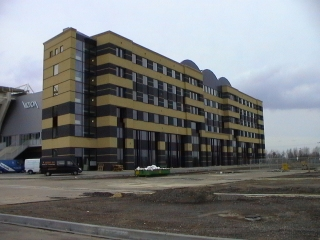
Dit is de kolossale oostvleugel waar nog steeds
aan gewerkt wordt.
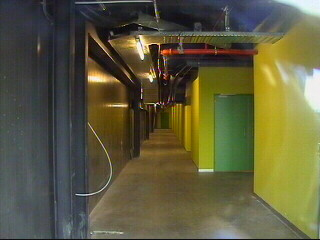
Deze foto's dateren van 7 maart 2003. De reus-
achtige oostelijke aanbouw wordt slechts voor
een gedeelte in beslag genomen door discotheek
Vizion. Hier zien we de begane grond van het zes
verdiepingen hoge gebouw. De huiskleuren zijn
geel en groen hetgeen weinig met goede smaak
van doen heeft.
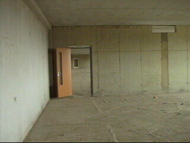
Op de hogere etages is men nog niet aan het
schilderwerk toe. Hier zijn zojuist de deuren
ingehangen.
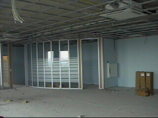
Het plafondsysteem in aanleg. In de hoek wordt
naar alle waarschijnlijkheid een sauna gemonteerd.
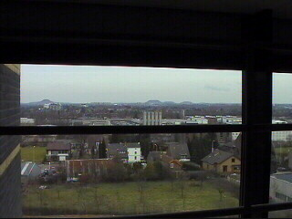
Vanaf de bovenste verdieping heb je een mooi
uitzicht op de Duitse mijnsteenbergen.
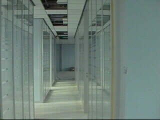
Nog meer sauna's? Het lijkt op een waar spiegel-
paleis. Een zeer luxe uitstraling!
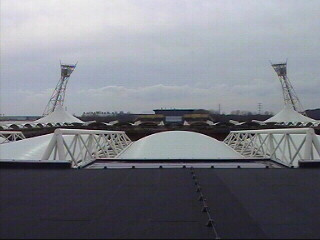
Vanaf het dak van de Vizion kun je het stadion
mooi overzien.
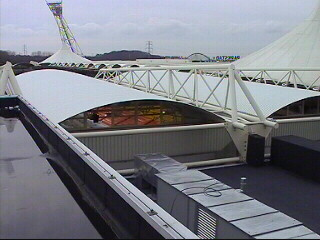
De noordzijde.
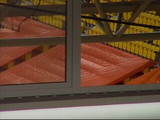
De benedenste stoeltjes worden met zeil tegen
de regen beschermd.
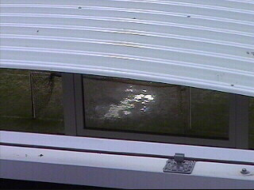
Het doelgebied ligt er zorgelijk bij.
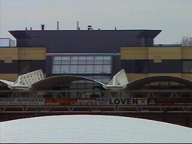
Het veld is verder onzichtbaar van hieruit.
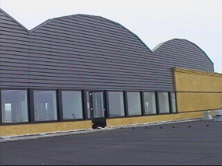
De bovenste etage. Volgens een bouwvakker
komen er in de oostelijke aanbouw luxe
business-units.
© Koempels
Pleasure Dome
Koempels
Pleasure Dome